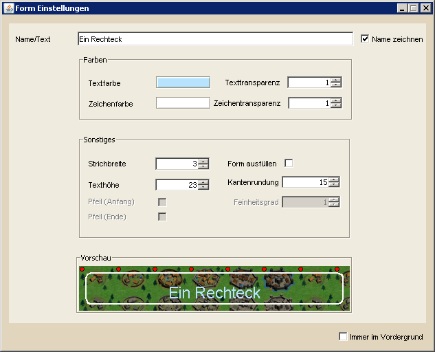

Die Formeinstellungen |
|
|  | |
| Die Formeinstellungen dienen dazu, das Aussehen von Formen sowohl vor als auch nach ihrer Erstellung zu konfigurieren. Im oberen Bereich kann man den Namen der Form festlegen bzw. den angezeigten Text für die Form 'Text'. Das danebenliegende Feld Name zeichnen ist für alle Formen außer 'Text' optional. Ist das Feld angewählt wird der Name der Form in deren Mitte (Rechteck, Ellipse, Freihandform) oder am Anfang (Linie) angezeigt. Im folgenden Bereich legt man die Farben fest, mit denen Text und Form gezeichnet werden. Zudem kann man für beides getrennt den Grad der Transparenz angeben. Der Wert 0.1 ist das Minimum, 1.0 dagegen der maximale Wert, bei dem keine Transparenz verwendet wird. Für die Form 'Text' ist natürlich nur die Textfarbe wählbar. Im Bereicht Sonstiges können weitere Einstellungen für die Formen vorgenommen werden. Viele dieser Einstellungen sind je nach gewählter Form aktiviert oder deaktiviert. Pfeile sind z.B. lediglich für Linien verfügbar, die Kantenrundung nur für Rechtecke. |
|
 |
Eine Besonderheit stellt der Feinheitsgrad dar, der nur für Freihandzeichnungen verfügbar ist. Um zu verstehen, wofür dieser Wert verantwortlich ist, muss man wissen, dass Freihandformen in DS Workbench durch sogenannte Pfade angenährt (approximiert) werden. Als Pfad wird eine Anreihung von Punkten bezeichnet, von denen immer zwei Aufeinanderfolgende durch eine Linie verbunden werden, ähnlich den allseits bekannten "Rätseln", bei denen man die Zahlen von 1 bis X verbinden muss, um ein Bild zu erhalten. Zeichnet man nun mit der Maus eine Freihandzeichnung, so könnte man natürlich jede Position des Mauszeigers speichern und so genau den Pfad erzielen, der mit der Maus verfolgt wurde. Dieses Vorgehen würde aber zwangsläufig dazu führen, dass eine enorme Datenmenge entsteht und somit auch die Zeichenzeiten je nach Länge des Pfades drastisch ansteigen. Um das zu vermeiden, wurde der Feinheitsgrad eingeführt der gewissermaßen entscheidet, wann ein neuer Punkt in den Pfad eingefügt und wann eine Mausbewegung ignoriert wird. Die Konsequenz sind zwar, je nach Feinheitsgrad, mehr oder weniger eckigere Formen, was jedoch im Vergleich zum Geschwindigkeitsgewinn einen lohnenden Kompromiss darstellt. |
| Welche Auswirkung der Feinheitsgrad und die anderen Werte auf das Aussehen einer Form haben, probiert man am besten selbst aus. Um Parameter zu ändern muss jedoch nicht Unmengen an Formen zeichnen, sondern kann vorhandene Formen über die Formansicht ausfindig machen und bearbeiten. | |